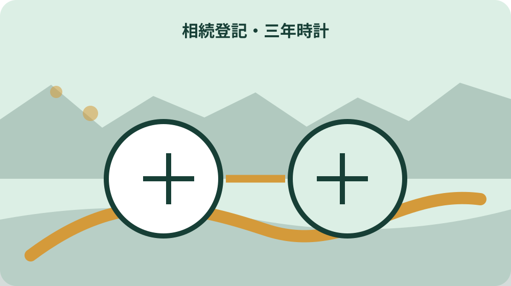
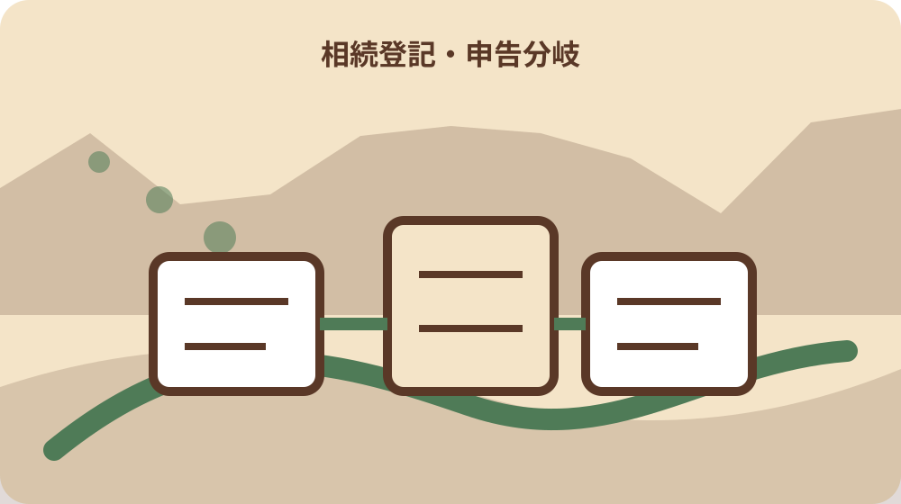

先に結論を確認する
この記事の答え：死亡日だけでは決めません。相続開始を知り、その不動産の所有権を取得したことを知った日が基本の起点です。物件ごとに根拠を示して法務局や専門家へ確認します。
森町で最初に照合する条件：死亡日だけで期限を確定しない
期限は死亡日だけで数えない
森町の不動産を相続したとき、相続登記の期限を死亡日だけで機械的に三年後としません。相続の開始を知った日と、その不動産を取得したことを知った日を記録し、遺産分割が成立した場合は成立日を別の起点として管理します。
この記事の答えは、基本の登記義務と遺産分割後の追加義務を二本の時計に分けることです。物件ごとに知った日、根拠資料、担当司法書士等への相談日、申請済みかを一行で残します。
法務省は相続登記の申請義務化を2024年4月1日から施行し、自己のために相続開始があったことと不動産の所有権取得を知った日から3年以内と説明しています。
2024年4月1日より前の相続にも義務が及び、原則として2027年3月31日までという経過期限があります。ただし取得を知った日が後なら、その知った日からの三年も確認します。
完了条件は家族が独自に期限を断定することではありません。各物件の起点候補と根拠をそろえ、法務局や司法書士へ具体的に確認できる状態です。
期限カードの第1欄「期限は死亡日だけで数えない」には、採用候補日だけでなく、その日を知った資料名、受取日、確認した人を付けます。日付の根拠が変わった場合は旧記録を消さず、専門家へ訂正理由も示します。
相談前に「期限は死亡日だけで数えない」の未確認箇所を質問文へ直し、物件番号と一緒に法務局等へ伝えます。一般的な期限だけを尋ねず、この土地・家屋でどの起点を用いるか、追加申請が残るかを確認します。
期限は死亡日だけで数えないという作業名は表の索引にも使います。索引から元資料、担当者、確認日、次の期限へ一回で移れるかを確かめ、家族が別の物件や別の年度の記録を誤って開かないよう物件番号を併記します。
相続開始を知った日と物件を知った日を分ける
被相続人が亡くなったことを知った日と、森町の特定土地・家屋が遺産に含まれると知った日は同じとは限りません。課税明細、名寄帳、権利証、登記事項など、物件を知った根拠を日付と一緒に残します。
遠方の山林、共有持分、未登記家屋などが後から判明した場合は、最初の相続登記ファイルへ追加します。最初の死亡日だけで全物件の期限を一括計算しません。
家族から聞いた日、書類を受け取った日、登記事項を確認した日が違う場合は三つとも残します。どれが法的起点かは個別事情を示して確認します。
所有していると思っていた物件が別人名義だった場合も、推測で取得済みにしません。名義、相続関係、取得原因を登記専門家へ確認します。
一件表には物件番号、所在、地番・家屋番号、知った日候補、根拠、確認者を置きます。期限だけのカレンダーにせず、なぜその日を採用したか追えるようにします。
物件番号を先頭に置いた第2カードで「相続開始を知った日と物件を知った日を分ける」を整理し、家族の記憶、受領書類、登記事項のそれぞれに確認日を付けます。結論だけを上書きせず、起点候補が変わった経過を専門家へ説明できるようにします。
窓口へは「相続開始を知った日と物件を知った日を分ける」の一般論ではなく、対象不動産、相続の時期、知った経緯、現在の登記状態をまとめて質問します。回答後は採用した期限と残る義務を分け、別物件へ無条件で流用しません。
相続開始を知った日と物件を知った日を分けるという作業名は表の索引にも使います。索引から元資料、担当者、確認日、次の期限へ一回で移れるかを確かめ、家族が別の物件や別の年度の記録を誤って開かないよう物件番号を併記します。
2024年4月1日前の相続を経過期限へ置く
施行日前に始まった相続だから対象外とは扱いません。法務省の案内に沿い、2027年3月31日と、所有権取得を知った日から三年のどちらが関係するかを確認します。
古い相続では相続人が増え、住所や戸籍の収集に時間がかかることがあります。期限直前に始めず、現在の登記名義人と相続人の範囲を先に調べます。
長年固定資産税を払っていたことだけで相続登記済みとは判断しません。課税上の納税者と登記名義を別資料で照合します。
共有持分だけを相続している可能性がある場合は、全部所有と書かず持分欄を設けます。共有者の氏名と住所も登記事項から確認します。
経過期限の確認日は記録します。法務省資料が更新された場合も、相談時点の資料と専門家回答を保管し、行動時に再確認します。
期限カードの第3欄「2024年4月1日前の相続を経過期限へ置く」には、採用候補日だけでなく、その日を知った資料名、受取日、確認した人を付けます。日付の根拠が変わった場合は旧記録を消さず、専門家へ訂正理由も示します。
相談前に「2024年4月1日前の相続を経過期限へ置く」の未確認箇所を質問文へ直し、物件番号と一緒に法務局等へ伝えます。一般的な期限だけを尋ねず、この土地・家屋でどの起点を用いるか、追加申請が残るかを確認します。
2024年4月1日前の相続を経過期限へ置くという作業名は表の索引にも使います。索引から元資料、担当者、確認日、次の期限へ一回で移れるかを確かめ、家族が別の物件や別の年度の記録を誤って開かないよう物件番号を併記します。
遺産分割成立日からの追加義務を別時計にする
法定相続分での登記や相続人申告登記をした後に遺産分割が成立した場合、分割で不動産を取得した人には追加の登記義務が生じます。最初の対応だけで案件を閉じません。
遺産分割協議書の作成日、全員の合意成立日、印鑑証明等がそろった日、実際の申請日を分けます。どの日が起点になるか専門家へ確認します。
複数物件を別々の相続人が取得するなら、物件行ごとに取得者と分割成立日を入れます。一つの協議書でも申請担当と必要書類が異なる場合があります。
協議内容が変わった、調停・審判になった、未成年者や行方不明者が関係する場合は一般表だけで進めません。個別の法的助言を受けます。
二本目の時計は分割後の申請済み確認まで残します。受付票、登記完了証、更新後の登記事項を保管し、名義が変わったことを確認します。
物件番号を先頭に置いた第4カードで「遺産分割成立日からの追加義務を別時計にする」を整理し、家族の記憶、受領書類、登記事項のそれぞれに確認日を付けます。結論だけを上書きせず、起点候補が変わった経過を専門家へ説明できるようにします。
窓口へは「遺産分割成立日からの追加義務を別時計にする」の一般論ではなく、対象不動産、相続の時期、知った経緯、現在の登記状態をまとめて質問します。回答後は採用した期限と残る義務を分け、別物件へ無条件で流用しません。
遺産分割成立日からの追加義務を別時計にするという作業名は表の索引にも使います。索引から元資料、担当者、確認日、次の期限へ一回で移れるかを確かめ、家族が別の物件や別の年度の記録を誤って開かないよう物件番号を併記します。

相続人申告登記の役割と限界を分ける
遺産分割が期限内にまとまらない場合、相続人申告登記という制度があります。法務省は特定の相続人が単独で申出でき、オンライン提出にも対応すると案内しています。
相続人申告登記は基本的な申請義務を履行するための仕組みであり、誰が不動産を最終取得するかを確定する登記とは異なります。
申告後に遺産分割が成立すれば、分割内容に沿う追加登記を別期限で管理します。申告をした日だけを最終完了日にしません。
対象物件の漏れ、申出人の範囲、必要書類、管轄は法務局へ確認します。家族の一人が申出したことを、他の相続人のすべての義務履行と推測しません。
一件表には申告制度を使うか、通常の相続登記へ進むか、相談中かを分岐欄にします。判断者と相談日を残します。
期限カードの第5欄「相続人申告登記の役割と限界を分ける」には、採用候補日だけでなく、その日を知った資料名、受取日、確認した人を付けます。日付の根拠が変わった場合は旧記録を消さず、専門家へ訂正理由も示します。
相談前に「相続人申告登記の役割と限界を分ける」の未確認箇所を質問文へ直し、物件番号と一緒に法務局等へ伝えます。一般的な期限だけを尋ねず、この土地・家屋でどの起点を用いるか、追加申請が残るかを確認します。
相続人申告登記の役割と限界を分けるという作業名は表の索引にも使います。索引から元資料、担当者、確認日、次の期限へ一回で移れるかを確かめ、家族が別の物件や別の年度の記録を誤って開かないよう物件番号を併記します。
森町の課税資料と登記名義を照合する
森町の固定資産税関係様式には、所有者が亡くなったときの相続人代表者指定届があります。これは町への税務上の届出であり、相続登記そのものとは分けます。
森町の名寄帳は所有者・納税義務者ごとの資産明細を確認する資料です。課税明細と同内容という町FAQも参照し、相続物件候補を洗い出します。
名寄帳に載ることと登記名義が更新されたことは同じではありません。土地の地番、家屋番号、持分を登記事項と照合します。
非課税、共有、課税上の代表者、未登記家屋などで見え方が異なる可能性があります。町資料だけで全不動産を確定せず、法務局資料と組み合わせます。
町へ届出した日、名寄帳を取得した日、登記事項を確認した日を別々に残します。税務連絡と登記期限の混線を防ぎます。
物件番号を先頭に置いた第6カードで「森町の課税資料と登記名義を照合する」を整理し、家族の記憶、受領書類、登記事項のそれぞれに確認日を付けます。結論だけを上書きせず、起点候補が変わった経過を専門家へ説明できるようにします。
窓口へは「森町の課税資料と登記名義を照合する」の一般論ではなく、対象不動産、相続の時期、知った経緯、現在の登記状態をまとめて質問します。回答後は採用した期限と残る義務を分け、別物件へ無条件で流用しません。
森町の課税資料と登記名義を照合するという作業名は表の索引にも使います。索引から元資料、担当者、確認日、次の期限へ一回で移れるかを確かめ、家族が別の物件や別の年度の記録を誤って開かないよう物件番号を併記します。
物件ごとに期限カードを作る
土地一筆、家屋一棟、持分一件を基本単位に期限カードを作ります。所在だけでなく地番・家屋番号を使い、同じ住所の複数物件を混ぜません。
カードには相続開始を知った日、所有権取得を知った日、遺産分割成立日、申告・申請日、完了確認日を並べます。未確認欄は空白でなく未確認と表示します。
根拠資料として死亡の記載がある戸籍、課税明細、名寄帳、登記事項、遺産分割協議書などのファイル番号を付けます。原本の保管者も記録します。
期限計算の式を表へ書いても、それを専門家回答の代わりにしません。相談時にカードを示し、採用する起点と必要手続を確認します。
複数の相続が連続している場合は世代ごとにカードを分けます。一枚へ全員を詰め込まず、どの相続で誰が取得したかを追います。
期限カードの第7欄「物件ごとに期限カードを作る」には、採用候補日だけでなく、その日を知った資料名、受取日、確認した人を付けます。日付の根拠が変わった場合は旧記録を消さず、専門家へ訂正理由も示します。
相談前に「物件ごとに期限カードを作る」の未確認箇所を質問文へ直し、物件番号と一緒に法務局等へ伝えます。一般的な期限だけを尋ねず、この土地・家屋でどの起点を用いるか、追加申請が残るかを確認します。
物件ごとに期限カードを作るという作業名は表の索引にも使います。索引から元資料、担当者、確認日、次の期限へ一回で移れるかを確かめ、家族が別の物件や別の年度の記録を誤って開かないよう物件番号を併記します。
正当な理由と過料を自己判断しない
法務省は正当な理由なく義務に違反した場合、十万円以下の過料の対象となり得ると説明しています。罰則だけを強調して不安をあおらず、早めの確認につなげます。
正当な理由に当たるか、催告後の対応がどうなるかを家族だけで判断しません。事情と進捗を整理し、法務局や司法書士へ相談します。
戸籍収集が難しい、相続人が多い、遺産範囲に争いがあるなどの事情は、発生日と対応履歴を残します。単に「忙しい」で止めず、次にできる行動を決めます。
通知や照会を受けた場合は受取日、回答期限、担当、提出内容を記録します。原本を紛失せず、専門家へ速やかに見せます。
期限カードの目的は過料の予測ではありません。放置せず相談している経過と、物件ごとの未処理を見えるようにすることです。
物件番号を先頭に置いた第8カードで「正当な理由と過料を自己判断しない」を整理し、家族の記憶、受領書類、登記事項のそれぞれに確認日を付けます。結論だけを上書きせず、起点候補が変わった経過を専門家へ説明できるようにします。
窓口へは「正当な理由と過料を自己判断しない」の一般論ではなく、対象不動産、相続の時期、知った経緯、現在の登記状態をまとめて質問します。回答後は採用した期限と残る義務を分け、別物件へ無条件で流用しません。
正当な理由と過料を自己判断しないという作業名は表の索引にも使います。索引から元資料、担当者、確認日、次の期限へ一回で移れるかを確かめ、家族が別の物件や別の年度の記録を誤って開かないよう物件番号を併記します。
家族の担当と専門家への質問を分ける
家族担当は戸籍、課税資料、登記事項、協議書等を集める人、相談予約をする人、費用を管理する人に分けます。法的判断は専門家へ渡します。
質問票には、各物件の起点、経過期限、相続人申告登記の利用可否、遺産分割後の追加義務、管轄、必要書類を置きます。
電話で聞いた回答は日時、窓口、質問内容、回答、次の提出物を記録します。別の物件へ回答を流用する場合は条件が同じか再確認します。
司法書士へ依頼するなら見積り範囲、登録免許税、戸籍等実費、追加相続の扱い、完了書類を確認します。価格だけで業務範囲を比較しません。
家族会議では期限を責め合うより、未確認物件と不足書類を共有します。次回日までに誰が何を集めるかを一つずつ決めます。
期限カードの第9欄「家族の担当と専門家への質問を分ける」には、採用候補日だけでなく、その日を知った資料名、受取日、確認した人を付けます。日付の根拠が変わった場合は旧記録を消さず、専門家へ訂正理由も示します。
相談前に「家族の担当と専門家への質問を分ける」の未確認箇所を質問文へ直し、物件番号と一緒に法務局等へ伝えます。一般的な期限だけを尋ねず、この土地・家屋でどの起点を用いるか、追加申請が残るかを確認します。
家族の担当と専門家への質問を分けるという作業名は表の索引にも使います。索引から元資料、担当者、確認日、次の期限へ一回で移れるかを確かめ、家族が別の物件や別の年度の記録を誤って開かないよう物件番号を併記します。

登記完了後に税・保険・管理へ渡す
登記が完了したら更新後の登記事項を取得し、申請内容と一致するか確認します。受付済みだけで名義変更完了と扱いません。
森町の固定資産税関係の連絡、保険、電気・水道、管理契約など、名義や送付先の確認が必要な項目へ完了情報を渡します。
共有になった場合は持分、利用、費用、修繕、売却の合意表を別に作ります。登記完了が日常管理の合意まで自動的に整えるわけではありません。
原本と電子写しの保管場所、閲覧できる家族、廃棄時期を決めます。個人情報を含む戸籍等を無期限に広く共有しません。
案件の終了日は登記完了確認日と関連手続の引継ぎ日を分けます。未処理が残れば担当と期限を付けて開いたままにします。
物件番号を先頭に置いた第10カードで「登記完了後に税・保険・管理へ渡す」を整理し、家族の記憶、受領書類、登記事項のそれぞれに確認日を付けます。結論だけを上書きせず、起点候補が変わった経過を専門家へ説明できるようにします。
窓口へは「登記完了後に税・保険・管理へ渡す」の一般論ではなく、対象不動産、相続の時期、知った経緯、現在の登記状態をまとめて質問します。回答後は採用した期限と残る義務を分け、別物件へ無条件で流用しません。
登記完了後に税・保険・管理へ渡すという作業名は表の索引にも使います。索引から元資料、担当者、確認日、次の期限へ一回で移れるかを確かめ、家族が別の物件や別の年度の記録を誤って開かないよう物件番号を併記します。
大石の視点：期限より先に起点根拠を置く
ここまでの三年義務、施行日前相続の経過期限、遺産分割後の追加義務、相続人申告登記は法務省資料で確認できる事実です。個別の起点判断は法務局や専門家へ確認します。
私、大石浩之は、カレンダーへ期限を書く前に、知った日と根拠資料を物件ごとに置くことを勧めます。これは法務省の指定様式ではなく、家族の記憶違いを減らす実務提案です。
相続税、固定資産税、相続登記は別の期限と手続です。町への相続人代表者届を出したから登記も終わったと扱わないことが大切です。
期限が近くても、物件の所在や地番が曖昧なまま申請内容を決めません。まず候補一覧を作り、専門家へ未確認を明示します。
不動産を売ると決めていなくても、名義と期限の整理は管理の土台になります。売却判断と登記義務を同じ会議で無理に結論づけません。
期限カードの第11欄「大石の視点：期限より先に起点根拠を置く」には、採用候補日だけでなく、その日を知った資料名、受取日、確認した人を付けます。日付の根拠が変わった場合は旧記録を消さず、専門家へ訂正理由も示します。
相談前に「大石の視点：期限より先に起点根拠を置く」の未確認箇所を質問文へ直し、物件番号と一緒に法務局等へ伝えます。一般的な期限だけを尋ねず、この土地・家屋でどの起点を用いるか、追加申請が残るかを確認します。
大石の視点：期限より先に起点根拠を置くという作業名は表の索引にも使います。索引から元資料、担当者、確認日、次の期限へ一回で移れるかを確かめ、家族が別の物件や別の年度の記録を誤って開かないよう物件番号を併記します。
二つの時計と完了証拠を確認する
最後に各物件カードを開き、基本義務の起点、遺産分割後の起点、申請方法、提出日、完了日が埋まっているか確認します。
相続人申告登記を利用したカードには、将来の遺産分割後登記が残ることを明示します。完了済み色で塗りつぶしません。
法務局や司法書士から受け取った書類名、日付、保管場所を記します。家族が完了証拠へ到達できるか試します。
新しい不動産が判明したら既存カードの期限をコピーせず、新しい物件行として知った日から整理します。
結論は、死亡日一つで期限を決めず、取得を知った日と遺産分割成立日を二つの時計で管理し、物件ごとに専門確認と完了証拠を残すことです。